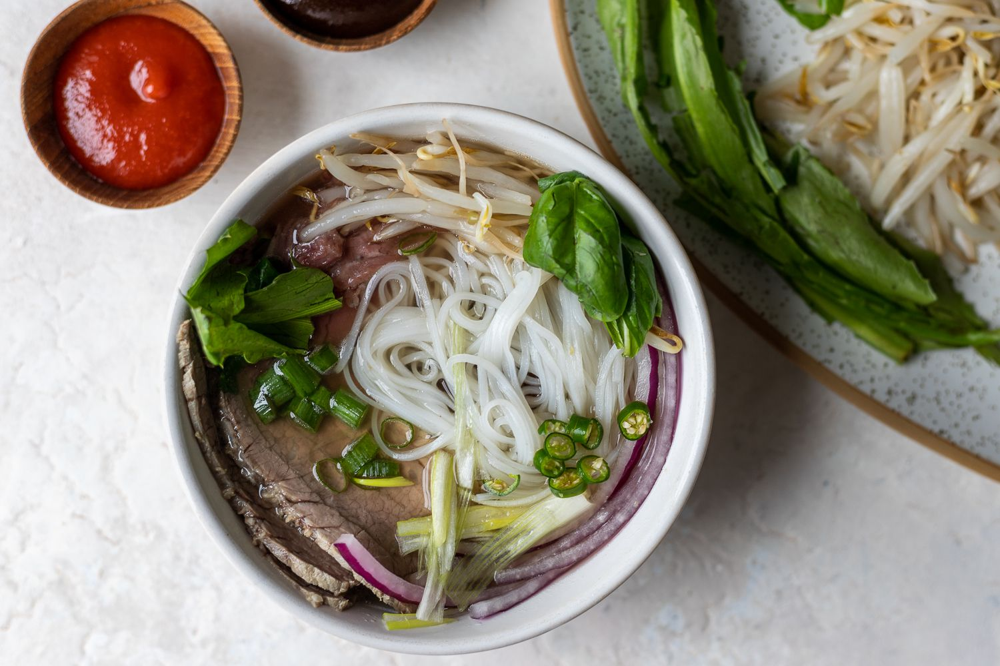

Pho

Pho Description
Furthermore, pho is pronounced as fuh, and is made by a bone-beef broth. Thinly sliced beef often served raw and cooked in the hot soup when served is also accompanianed with bean sprouts.
Pho is a light delecious meal that warms the body and mind. Moreover, aromatic herbs are served on a seperate plate that gives a fresh aroma when placed into the dish.
Pho is a long process and this recipe is no exception so get ready to start cooking!
Ingredients
Atomatics
- 2 Large Onions, halved
- 150g/ 50oz Ginger, Sliced down the centre
Spices
- 10 Star Anise
- 4 cinnamon quills
- 4 cardamon pods
- 3 cloves
- 1.5 tbsp coriander seeds
Beef Bones
- 1.5kg / 3lb beef brisket
- 1kg / 2lb meaty beef bones
- 1kg / 2lb marrow bones
- 3.5 litres / 3.75 quarts water
Seasonings
- 2 tbsp white sugar
- 1tbsp salt
- 40 ml / 3 tbsp fish sauce
Noodle Soup - Per Bowl
- 50g / 1.5 oz dried rice sticks
- 30g / 1 oz beef tenderloin, raw, ery thinly sliced
- 3 -5 brisket slices
Toppings
- beansprouts, handful
- Thai basil, 3 - 5 sprigs
- coriander/cilantro, 3 - 5 sprigs
- Lime wedges
- finely sliced red chili
- Hoisin sauce
- Sriracha
Steps
- 5 minute boil of Bones and meat
- Extract Scum for a clear broth
- Rinse the bones to get scum off
- Simmer for 3 hours with Spices and other ingredients
- Remove Brisket
- Bones only simmer for 40 mins
- Strain
- Ladle into bowls of noodles, topics, and serve!